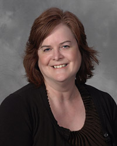

01
Real estate
Buying, selling or arranging a mortgage? Get help with the documentation behind your property transaction.
- Property purchases & sales
- Mortgages & refinancing
- Property transfers
A new home. A plan for your family. A document that matters. Take your next step with Charlene Silvester, Notary Public in Vernon.
Practical notarial services for property, future planning and the documents in between.
Buying, selling or arranging a mortgage? Get help with the documentation behind your property transaction.
Make room for the conversations that matter. Discuss your wishes and the documents that help put a plan in place.
Bring clarity to the signing process, with help for documents that require a witnessed signature or a certified copy.

Raised in Vernon, Charlene brings a local perspective and a background in education to her notarial practice. She earned her Bachelor of Education at the University of Victoria and completed her notary training through the University of British Columbia.
Commissioned as a Notary Public in May 2009, her practice focuses on real estate, mortgages, wills, powers of attorney and notarizations.
Get in touch with Charlene ↗Every document and transaction is different. Contact the office first so we can discuss what you need and how to prepare.
This website is an introduction to the practice. Contact the office for advice about your particular circumstances.
Call or email with the type of document or transaction and any relevant deadlines. Please keep sensitive documents out of your first email.
The office will explain the next steps, confirm what to bring and discuss availability and applicable fees.
Have your documents and two pieces of valid identification ready. If your signature needs witnessing, wait to sign until your appointment.
Call 250-542-4313 or email charlene@vernonnotary.com to discuss your needs. For real estate matters, appointment timing depends on receipt of the necessary instructions and preparation of documents.
If you need your signature witnessed, leave it unsigned and bring it to your appointment. Contact the office beforehand to confirm the requirements for your document.
Yes. The office lists wheelchair access at 102 – 2903 35th Avenue in Vernon. Call ahead if you would like to discuss access arrangements.
This website is available in English and French. Please contact the office to confirm the language options for appointments and documents.
Tell us a little about what brings you here. We’ll help you find your next step.
Email Charlene250-542-4313
charlene@vernonnotary.com
Fax : 250-558-0666
Monday – Friday
8:30 am – 4:30 pm
Please call to confirm availability.
Notarizations: debit, e-transfer, cash or cheque.
Real estate: bank draft or certified cheque.